Catalog Search Tool: Visualization: Interacting with a FITS File
Once you have launched the visualizer portion of the application, a
window appears with an image pane that populated with an image related
to your search or selection. The image that is displayed is a FITS
file, not a lossy-compressed representation of the image.
Contents:
+Basic FITS Viewer
+Visualization Tools -- Image Options
+Footprints -- overlaying markers
+Breaking out of the pane (and going back)
+Making 3-color Images
Here we describe the basic features of the FITS viewer, in roughly
the order in which you might encounter them in the window.
- Interactive exploration of the image with the mouse.
- Move your mouse over any image that is loaded into the viewer.
Details about the image and, specifically, the pixel beneath your
mouse cursor, appear along the top of the window with a variety of
useful items. Some information is updated in real time (such as
coordinates); some information (such as flux densities) is updated
when you stop moving your mouse for a second or two. The image can be
interactively investigated in this fashion. In the Catalog Search
Tool, this is a popup in the upper right:
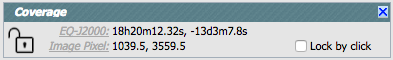
You can make it 'stick' on a
particular place on the image -- tick the "Lock by click" box and then
click on the image at your desired location.
When you place your mouse over the image in the upper left of the
Catalog Search Tool results, you get some icons that appear in the
upper right of the image. Click on the one that looks like this:  and you will reveal the Image Toolbox:
and you will reveal the Image Toolbox:
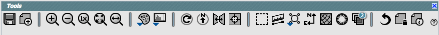
from which you can select a
variety of options, now described. Letting your mouse hover over any of
these icons will result in a "tool tip" that appears in order to
remind you what the icon does. This information is also dynamically
updated on the bottom of the toolbox itself.
 Saving the image.
Saving the image.
- The diskette icon will allow you to save the current image as a
FITS or PNG or Regions file to your local disk. Note that you
control where the file is saved on your disk through your browser;
your browser may be configured to store all downloads in a particular
location on your disk.
Saved FITS images will not save the color stretches or overlays; it
will just save the underlying FITS image. Saved PNG files WILL
include any overlays or annotations you have placed on the image, but
will not include the underlying FITS image. Saved regions files will
not save the underlying image, but will just save the overlays as a
DS9 Regions file. See the DS9 website for more information on the syntax of
these DS9 region files.
Note that you can save the original or a cropped version of the
FITS file; see the select region icon below to crop, and then save the
FITS image.
The Catalog Search Tool, by default, overlays the catalog on the
image. If your catalog consists of tens of thousands of sources, and
you save a regions file from the catalog overlay, then you will have
fewer sources in the regions file than you have in the full
catalog.
 Selecting a new image.
Selecting a new image.
- Click on this icon to add a new image through a new search, or to
change the current image to a new image. The window you obtain looks
like this:
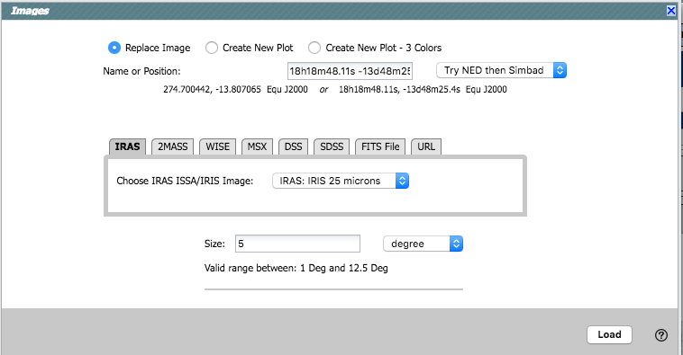
Your options are:
- Replace Image -- replace the image that is currently active
- Create New Plot -- add a new image (in addition to the previously loaded
one, if there is one)
- Create New Plot-3 colors -- Create a new three-color image (more
on this below)
Searching from this point is straightforward -- you may enter a target
name, and have either NED-then-Simbad or Simbad-then-NED resolve the
target name into coordinates. Alternatively, you may enter
coordinates directly. These coordinates can be in decimal degrees or
in hh:mm:ss dd:mm:ss format. By default, it assumes you are working in
J2000 coordinates; you can also specify galactic, ecliptic, or B1950
coordinates as follows:
- '46.53, -0.251 gal' means 46.53, -0.251 degrees in galactic coordinates
- '12.7, +4.3 ecl' means 12.7, +4.3 degrees in ecliptic coordinates
- '19h17m 11d58m b1950' means 19h17m 11d58m in B1950 coordinates
Examples are given below the text entry box before you start typing in
the box.
As you are completing a valid coordinate entry, it echoes back to
you what it thinks you are entering. Look right below the box in which
you are typing the coordinates to see it dynamically change.
 Zooming in or out.
Zooming in or out.
-
Clicking on these magnifying glass icons zooms in or out of the image.
The readout of how many times you are zoomed appears at the top of the
visualization window.
If you click zoom in or out rapidly, a pop-up window appears to allow
you to more rapidly select the zoom level you want. Select the desired
level, or click on the blue 'x' in the upper right to make the window
go away. Here is an example:
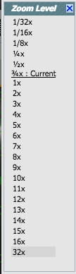
Note that there is a maximum (or minimum) allowed zoom level. A
notification will appear when you have reached the maximum (or
minimum) allowed zoom level for a given image. To enlarge things more
than that, please repeat your search to obtain new images with smaller
(or larger) spatial extent.
 Zooming to a 1-to-1 size.
Zooming to a 1-to-1 size.
- Clicking this icon will zoom the image such that one pixel in the
image is one pixel on your screen..
 Fit image to screen or fill
screen
Fit image to screen or fill
screen
-
These two icons are designed to maximize the available space in your
browser window. The first one automatically picks a zoom level such
that the image entirely fits within the available space. The second
one automatically picks a zoom level such that the image fills as much
of the available space as possible (e.g., it is zoomed such that short
axis of the window is filled with the image, whether that short axis
is left-right or up-down).
 Changing the color table.
Changing the color table.
- This icon enables you to change the color table of the
displayed image. When you click the button, a pull-down menu appears
with a wide variety of color table choices. Select your new color
table from the options shown:

 Changing the color table
stretch.
Changing the color table
stretch.
- This icon enables you to change the color table stretch of the
displayed image. When you click the button, a pull-down menu appears
with a variety of choices. You can choose from a set of pre-selected
options:
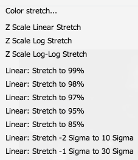
If you pick the
first one, "color stretch", you can customize the stretch. A pop-up
window appears with a histogram of the values in the image, and you
can change the stretch type and range.

If you pick a color stretch from the
pre-defined options, the pop-up window reflects this change. (Ex: pick
'Linear stretch to 99%'. Go back to "color stretch". Note that it has
filled out the stretch type and ranges to reflect the current choice.
Then -- either with the pop-up window still up or not -- go back and
pick a different pre-defined stretch from the standard options. Note
that the values in the pop-up change to reflect this current
choice.)
 Rotating the image to any
angle
Rotating the image to any
angle
- This feature allows you to rotate the image to any angle of your
choice, in degrees. It will rotate the image counter-clockwise (to the
left) from the current view, not necessarily the original image. For
example, entering "45" in the rotation pop-up and hitting "rotate"
will rotate the image 45 degrees counter-clockwise relative to its
original orientation. Then selecting the icon again, and entering
"180" in the pop-up (followed by hitting "rotate") will rotate the
image an additional 180 degrees counter-clockwise. To exit the pop-up
without making further changes, hit the blue 'x' in the upper right of
the pop-up.
 Rotating the image so that North is
up.
Rotating the image so that North is
up.
- Images retrieved from the IRSA Viewer are commonly already
oriented such that North is up, or close to it. However, when
interactively investigating images, or loading images from other
sources, you could find yourself in a situation where North is not
necessarily up. Clicking this icon will orient the selected image so
that North is up.
 Flipping the image on the y-axis.
Flipping the image on the y-axis.
- Clicking on this icon flips the image on the y-axis.
 Re-center the image.
Re-center the image.
- Clicking this icon will re-center the image on the center of the
last query, or on the center of the image.
 Selecting a region.
Selecting a region.
- When you click this icon, at first, nothing seems to happen. You
can now click and drag in the image, selecting a box on the image.
This box can be resized by grabbing and dragging the corners of the
box. You can make a new box right away by holding down the shift key
and clicking and dragging to select a new box. When you have selected
a region of the image, additional icons appear above the image: 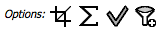 These icons will allow you to (from left
to right) crop the image to the selected region, obtain statistics on
the region, select the catalog sources overlaid on the image within
the region, or filter the overlaid catalog down to the enclosed
sources. (The last two options will only appear if you have a catalog
overlaid.) You can save the cropped FITS image via the save icon
(described above). The statistics option results in a pop-up that
looks something like this:

Note that it calculates the location of the minimum and maximum
fluxes, and the aperture and flux-weighted centroids. If you put your
mouse over the row of the table in the pop-up, that location appears
as an 'x' on the image. If you have a catalog overlaid, selecting
sources with this tool highlights them in the catalog list. You can
choose to impose a filter via this selection mechanism, the filters
icon changes above the catalog to indicate that there is a filter
applied ( ). To clear the filters,
click on the cancel filters icon (which also appears after you impose
filters):
). To clear the filters,
click on the cancel filters icon (which also appears after you impose
filters):  . There is much more on filters in the tables
section.
. There is much more on filters in the tables
section.
 Measuring a distance.
Measuring a distance.
- When you click this icon, at first, nothing seems to happen.
However, you can now click and drag to draw a line on the image, and
the length of the line is displayed (in the middle of the line). The
units for the measured distance (and the color of the overlay) can be
changed from the "layers" icon (described below). You can
calculate the difference in RA and Dec separately via the layers icon
as well; find the layer associated with the distance measurement and
tick the "offset calculation" box. When it displays the offset
calculation, it will give you the angle in degrees in one corner, and
the length of the line segment in the RA and Dec directions, in the
units you have specified.
 Put a marker on the image.
Put a marker on the image.
- When you click this icon, a pull-down menu appears with several
possible options:
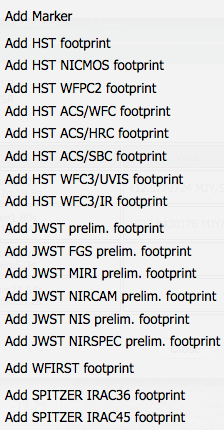
The first
overlay choice (simply called 'marker') is a red circle. Initially, it
appears in the center of the images, and is meant to be moved to
wherever you first click in the image. It looks like this:  . The small circles in the four corners are
"handles" -- you can grab the handles to resize the circle. You can
also drag it to any location in the image. You can change the color
of the marker (and add a label to it) via the "layers" icon (described
below). You can also remove this layer via the layers icon. There are
several additional options in the pulldown, enough that they have
their own section below.
. The small circles in the four corners are
"handles" -- you can grab the handles to resize the circle. You can
also drag it to any location in the image. You can change the color
of the marker (and add a label to it) via the "layers" icon (described
below). You can also remove this layer via the layers icon. There are
several additional options in the pulldown, enough that they have
their own section below.
 Show the directions of North and East
Show the directions of North and East
- When you click this icon, arrows appear on the image showing
which direction is North and which is East.
 Add a coordinate grid.
Add a coordinate grid.
- Click on this icon to overlay a coordinate grid on the image.
Click it again to remove it. Customize the units of the grid (to,
e.g., Galactic coordinates) via the "layers" icon (described
below).
 Read in a DS9 Regions file
Read in a DS9 Regions file
- When you click this icon, you get a pop-up window from which you
can read in a DS9 regions file from your local disk. See the DS9 website for more information on the syntax of
these DS9 region files. The supported regions are text, circle, box,
polygon, line, and annulus. To make this window go away without doing
anything, click on the blue 'x' in the upper right of the pop-up.
 Viewing/changing the layers on the
image.
Viewing/changing the layers on the
image.
- If you've been following along by trying these various options,
you now have an image with a lot of annotations on it. The number that
appears in blue over the layers icon tells you at any given time how
many layers you have on the currently selected image. If you click
this icon, you will get a pop-up window with a list of all the layers
you have on top of the image. From the pop-up, you can turn layers off
and on, at minimum, but you can often also change exactly what is
displayed and what colors get used for it. To add new things, though,
you need to go to other options within the toolbar. Here is an example
of a well-populated layers pop-up.
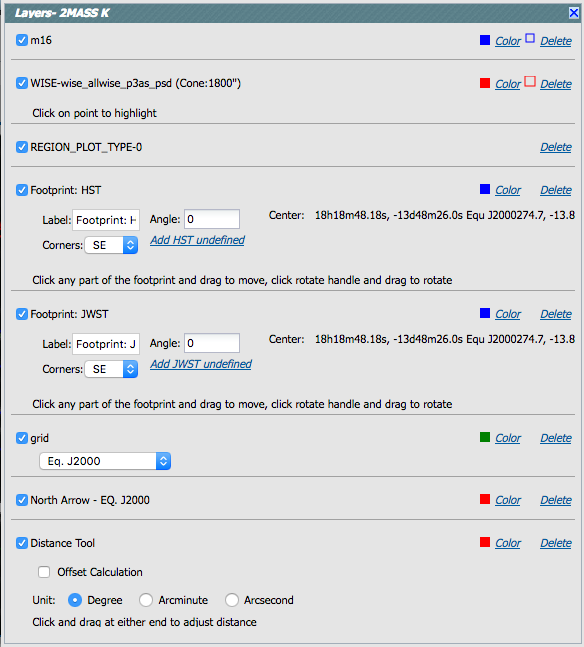
To change colors of a layer, click on
the 'colors' link to be taken to a new pop-up from which you can
select a new color. To delete a layer, click on 'delete'. Some layers
appear do not have that option; to remove that layer, click on the
corresponding icon from which you added that feature. To make this
pop-up window go away, click on the blue 'x' in the upper right of the
pop-up.
- 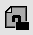Lock/unlock images
- Depending on what tool you're using, what you've done to this
point, and what view you have of the images you've loaded, you may
have this "lock images" icon appear in your toolbar. Clicking on this
icon locks all the images you have loaded for zooming, scrolling, etc.
Clicking on it again unlocks the images.
 Restoring everything to the
defaults
Restoring everything to the
defaults
- If you've played around a lot with the image, you may want to undo
everything you've done. Click this button to restore everything to
their original default values. Some layers may persist; remove them
via the layers icon described above.
 Viewing the FITS header.
Viewing the FITS header.
- This icon will display a pop-up window with the FITS header of the
background image. If you click on the columns of the FITS header in
the pop-up, it will sort the keywords alphabetically by that column.
This is useful for finding individual keywords in particularly densely
populated FITS headers. Click the header again to sort in
reverse-alphabetical order, and a third time to return to the default
order. Below are examples of the original and sorted FITS header.
To make this window go away,
click on the blue 'x' in the upper right of the pop-up, or click
"close" on the bottom.


Further, you can click on the gears in the upper right of the window
to bring up a dialog box via which you can filter down the header
keywords (using the same syntax as the other filters):

 Getting help.
Getting help.
- Clicking on this icon takes you to this help page.
Footprints
The marker icon () has a pull-down menu with
several possible options:
We
now describe these options here.
For each of these choices, the markers appear initially in the center
of the loaded images. The first mouse click you make in any of the
images will move the marker to that location.
Each of these marker choices, when overlaid and/or selected as
'active', has a dot-dash square around it. If it is asymmetrical (most
of them are), it has an additional "appendage" and a red plus at the
center of the footprint:

These so-called "handles" allow you to resize and/or rotate the
marker, depending on the nature of the marker. These handles only
appear when the marker is selected as active; if you wait a few
seconds, they vanish.
You can add multiple copies of the same marker. You can also change
the label of the marker from the layers pop-up (described generally
above).
The first overlay choice (simply
called 'marker') is a red circle.
The remaining markers are all footprints from other space-based
telescopes: HST, JWST, WFIRST, and Spitzer. The footprints for HST,
JWST, and WFIRST are derived from information provided via MAST (see
http://gsss.stsci.edu/webservices/footprints/help.html.)
For JWST and WFIRST in particular, they are pre-launch values.
 HST focal plane footprint.
Consult the HST
documentation for specifics on which apertures are which. The
footprint can be moved or rotated. Click the marker to make it
'active', then grab and drag the dash-dot line to resize or rotate it.
Note that if you overlay the footprint on a very
small image, nothing will appear to have happened. You need at least a
45 arcmin image to comfortably see the footprint. Change the color,
delete, or add more copies of the HST footprint from the layers
pop-up, one example of which is given here:
HST focal plane footprint.
Consult the HST
documentation for specifics on which apertures are which. The
footprint can be moved or rotated. Click the marker to make it
'active', then grab and drag the dash-dot line to resize or rotate it.
Note that if you overlay the footprint on a very
small image, nothing will appear to have happened. You need at least a
45 arcmin image to comfortably see the footprint. Change the color,
delete, or add more copies of the HST footprint from the layers
pop-up, one example of which is given here:
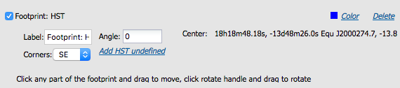
JWST focal plane footprints.
| JWST Footprint | Description |
|---|
| 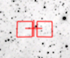 | JWST FGS Preliminary footprint |
| 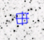 | JWST MIRI Preliminary footprint |
| 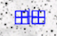 | JWST NIRCAM Preliminary footprint |
| 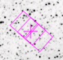 | JWST NIRSPEC Preliminary footprint |
| 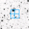 | JWST NIS Preliminary footprint |
 | JWST entire Preliminary footprint (cross is boresight) |
Note that if you overlay the footprint on a very
small image, nothing will appear to have happened. You need at least a
30 arcmin image to comfortably see the footprints, especially the
entire JWST focal plane. Please consult the JWST documentation for details
about the footprints. The footprint can be moved or rotated. Click
the marker to make it 'active', then grab and drag the dash-dot line
to resize or rotate it. Change the color, delete, or add more copies
of the footprints from the layers pop-up, one example of which is
given here:
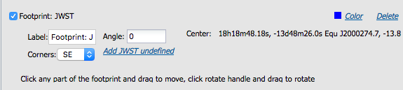
 WFIRST focal plane
footprint. As above, the footprint can be moved or rotated.
Click and drag the boresight (the cross hairs), which appears by
default to the upper right of the array of squares. A circle appears,
centered on the boresight, with four small circles ("handles") around
it. Grab and drag the small circles to rotate it, or drag the big
circle to move it. Note that if you overlay the
footprint on a very small image, nothing will appear to have happened.
You need at least a 60 arcmin image to comfortably see the footprint,
and even then you will probably have to click and drag to see the
entire footprint. Consult the WFIRST documentation for
specifics on the apertures. Change the color, delete, or add more
copies of the WFIRST footprint from the layers pop-up:
WFIRST focal plane
footprint. As above, the footprint can be moved or rotated.
Click and drag the boresight (the cross hairs), which appears by
default to the upper right of the array of squares. A circle appears,
centered on the boresight, with four small circles ("handles") around
it. Grab and drag the small circles to rotate it, or drag the big
circle to move it. Note that if you overlay the
footprint on a very small image, nothing will appear to have happened.
You need at least a 60 arcmin image to comfortably see the footprint,
and even then you will probably have to click and drag to see the
entire footprint. Consult the WFIRST documentation for
specifics on the apertures. Change the color, delete, or add more
copies of the WFIRST footprint from the layers pop-up:
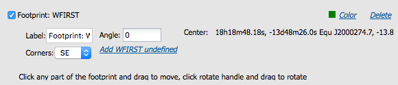
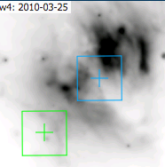 IRAC 3.6 and 4.5 micron
footprints. These two footprints can be placed separately
from each other. As above, the footprint can be moved or rotated.
Click and drag the boresight (the cross hairs), which appears by
default to the upper right of the array of squares. A circle appears,
centered on the boresight, with four small circles ("handles") around
it. Grab and drag the small circles to rotate it, or drag the big
circle to move it. Change the color, delete, or add more copies of
the IRAC footprints from the layers pop-up, one example of which is
given here:
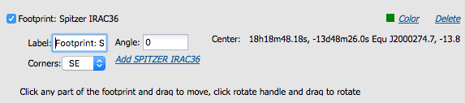
Breaking out of the pane (and going back)
The Catalog Search Tool results screen is broken up into panes - one
for images (top left), one for catalogs (bottom), and one for plots
from the catalog (top right). For some purposes, it is useful to
individually view just the table, or the images, or the plots, as
large as possible. In any pane, this icon  appears in the upper right of the pane.
Clicking on it will expand the pane into a larger window, as big as
possible given your browser size.
appears in the upper right of the pane.
Clicking on it will expand the pane into a larger window, as big as
possible given your browser size.
Click on "close" in the upper left to return to the default "window
pane" view.
You can create 3-color images from the pop-up obtained by clicking on
the select a new image icon () in the
image toolbox.
Select "Create New Plot - 3 colors" from the top row of options. The
rest of the pop-up changes to look like the following:

By default, you can select the red plane first; you can click on the
arrows on the left hand side of each color bar to expand the options
for those planes, as follows:

It assumes that you must want the same position for all three color
planes.
Select your options, and click 'Load' in the lower right.
To change the color stretch of each color plane individually, click on
the "Color Stretch" icon in the toolbox; see the Visualization section.
Caution: The images will be downsampled to the
resolution of the red image. If you, say, load an IRAS image into the
red plane, a WISE image into the green plane, and a 2MASS image into
the blue plane, all of the images will have IRAS-sized pixels. If you
load a WISE image into the red and green planes, and a 2MASS images
into the blue plane, the images will have WISE-sized pixels.